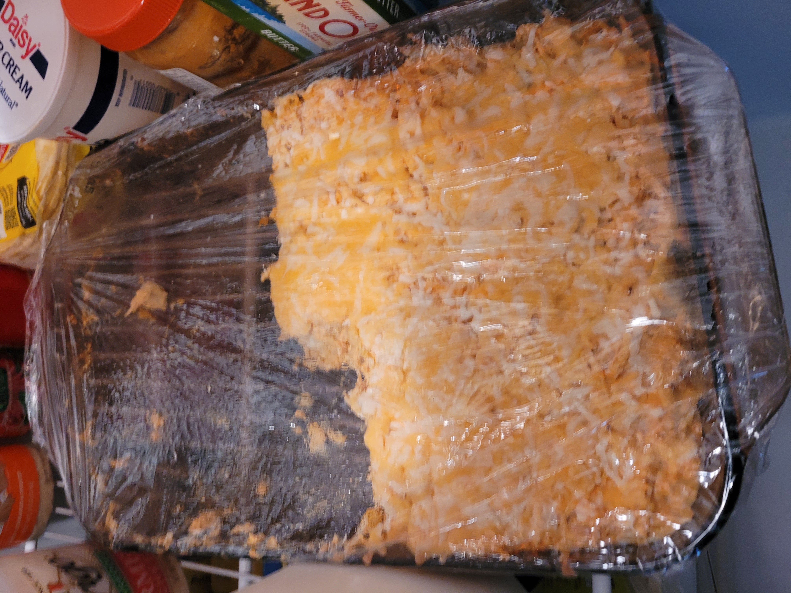

Buffalo Chicken and Potato Casserole

Description
Once upon a time we were gonna make twice baked potato skins. I steamed them, instead of baking,
and the whole thing fell apart. We just decided to moosh everything, and a star was born!
Ingredients
- 3 Medium chicken breasts
- Buffalo Sauce
- Buffalo Dip
- Sour Cream
- 6-8 Medium Potatoes
- shredded cheese of your favorite variety
Optional/for serving:
- Blue Cheese Sauce
- Crumbled Blue Cheese
- Ritz Crackers
Steps
- Pressure cook the chicken and shred
- wash and peel the potatoes
- Steam or Pressure Cook the potatoes, Mash.
- Fold all ingredients together until incorporated
- cover with shredded cheese and bake until properly brown,bubbly, and crispy
HOME